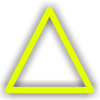
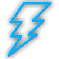

Live
Data updates instantly. Usually in the form of a live stream.
Semi-Live

Data updates often. If you see this symbol without numbers, it means that how often the data updates is unknown.
Sporatic

Data updates randomly, either as soon as there is new data, or just as often as an update is available. A common example would be a social media post.
Not Live
Data does not update at all. Usually for helpful facts and figures that won't ever change (or change so infrequently that it is pointless to say that they are 'live'
What do the numbers in some of the icons mean?
These are the update interval. It's how often the data updates. If the number is by itself, it's minutes. 'h' means hours, 'd' means days, 'w' means weeks. Anything longer than that will be marked as not live or sporatic based on the situation.